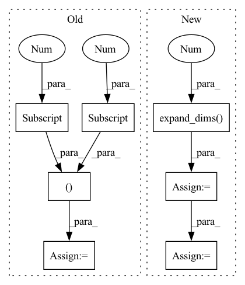

Pattern ID :27146

Before Change
//------------------------------------------------//
// 创建一副新图，并根据每个像素点的种类赋予颜色
//------------------------------------------------//
seg_img = np.zeros((np.shape(pr)[0], np.shape(pr)[1], 3))
for c in range(self.num_classes):
seg_img[:,:,0] += ((pr[:,: ] == c )*( self.colors[c][0] )).astype("uint8")
seg_img[:,:,1] += ((pr[:,: ] == c )*( self.colors[c][1] )).astype("uint8")
seg_img[:,:,2] += ((pr[:,: ] == c )*( self.colors[c][2] )).astype("uint8")
//------------------------------------------------//
After Change
image = Image.fromarray(np.uint8(seg_img))
elif self.mix_type == 2:
seg_img = (np.expand_dims(pr != 0, -1) * np.array(old_img, np.float32)).astype("uint8")
//------------------------------------------------//
// 将新图片转换成Image的形式
//------------------------------------------------//
image = Image.fromarray(np.uint8(seg_img))
return image
In pattern: SUPERPATTERN
Frequency: 3
Non-data size: 7
Instances
Fragment ID: 80820817
Project Name: bubbliiiing/hrnet-pytorch
Commit Name: e53724ea45003d8acd5d8b5465fa97038d486824
Time: 2022-03-19
Author: 3323290568@qq.com
File Name: hrnet.py
M Class Name: HRnet_Segmentation
N Class Name: HRnet_Segmentation
M Method Name: detect_image(2)
N Method Name: detect_image(2)
M Parent Class: object
N Parent Class: object
M File Name: hrnet.py
N File Name: hrnet.py
M Start Line: 153
M End Line: 170
N Start Line: 113
N End Line: 188
'>
Before Change
// 进行不失真的resize，添加灰条，进行图像归一化
//---------------------------------------------------//
if self.letterbox_image:
image, nw, nh = letterbox_image(image,(self.model_image_size[1],self.model_image_size[0]))
else:
image = image.resize((self.model_image_size[1],self.model_image_size[0]), Image.BICUBIC)
images = [np.array(image)/255]
After Change
//---------------------------------------------------------//
// 添加上batch_size维度
//---------------------------------------------------------//
image_data = np.expand_dims(np.transpose(preprocess_input(np.array(image_data, np.float32)), (2, 0, 1)), 0)
with torch.no_grad():
images = torch.from_numpy(image_data)
if self.cuda:
images = images.cuda()
//---------------------------------------------------//
// 图片传入网络进行预测
//---------------------------------------------------//
pr = self.net(images)[0]
//---------------------------------------------------//
// 取出每一个像素点的种类
//---------------------------------------------------//
pr = F.softmax(pr.permute(1,2,0),dim = -1).cpu().numpy()
//--------------------------------------//
// 将灰条部分截取掉
//--------------------------------------//
pr = pr[int((self.input_shape[0] - nh) // 2) : int((self.input_shape[0] - nh) // 2 + nh), \
int((self.input_shape[1] - nw) // 2) : int((self.input_shape[1] - nw) // 2 + nw)]
//---------------------------------------------------//
// 进行图片的resize
//---------------------------------------------------//
pr = cv2.resize(pr, (orininal_w, orininal_h), interpolation = cv2.INTER_LINEAR)
//---------------------------------------------------//
// 取出每一个像素点的种类
//---------------------------------------------------//
pr = pr.argmax(axis=-1)
//------------------------------------------------//
// 创建一副新图，并根据每个像素点的种类赋予颜色
'>
Fragment ID: 80820803
Project Name: bubbliiiing/pspnet-pytorch
Commit Name: 45cb37376cd329f953cb649830de848c0fb0feaf
Time: 2021-11-09
Author: 47347516+bubbliiiing@users.noreply.github.com
File Name: pspnet.py
M Class Name: PSPNet
N Class Name: PSPNet
M Method Name: detect_image(2)
N Method Name: detect_image(2)
M Parent Class: object
N Parent Class: object
M File Name: pspnet.py
N File Name: pspnet.py
M Start Line: 100
M End Line: 150
N Start Line: 108
N End Line: 164
'>
Before Change
//------------------------------------------------//
// 创建一副新图，并根据每个像素点的种类赋予颜色
//------------------------------------------------//
seg_img = np.zeros((np.shape(pr)[0], np.shape(pr)[1], 3))
for c in range(self.num_classes):
seg_img[:,:,0] += ((pr[:,: ] == c )*( self.colors[c][0] )).astype("uint8")
seg_img[:,:,1] += ((pr[:,: ] == c )*( self.colors[c][1] )).astype("uint8")
seg_img[:,:,2] += ((pr[:,: ] == c )*( self.colors[c][2] )).astype("uint8")
//------------------------------------------------//
After Change
image = Image.fromarray(np.uint8(seg_img))
elif self.mix_type == 2:
seg_img = (np.expand_dims(pr != 0, -1) * np.array(old_img, np.float32)).astype("uint8")
//------------------------------------------------//
// 将新图片转换成Image的形式
//------------------------------------------------//
image = Image.fromarray(np.uint8(seg_img))
return image
'>
Fragment ID: 80820818
Project Name: bubbliiiing/pspnet-pytorch
Commit Name: 373340e315d6e9a029041ec293673c06c3c1cb7e
Time: 2022-03-04
Author: 3323290568@qq.com
File Name: pspnet.py
M Class Name: PSPNet
N Class Name: PSPNet
M Method Name: detect_image(2)
N Method Name: detect_image(2)
M Parent Class: object
N Parent Class: object
M File Name: pspnet.py
N File Name: pspnet.py
M Start Line: 155
M End Line: 172
N Start Line: 115
N End Line: 190